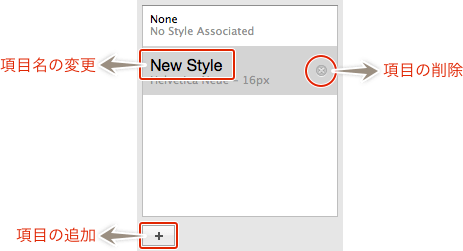

Sketch.app Advent Calender 2013 11日目の記事です。
Sketch.appのインスペクタシリーズ第5弾、文字の設定についてお届けします。
Sketchの基本。というSketch（Sketch 3）の基本操作にフォーカスした電子書籍をリリースしました。詳しくはこちらの「Sketchの基本。」のページをご覧ください。
この記事はSketch 2を元にした記事です。最新版の動作とは異なる可能性が高いため、参考程度にご覧ください。
文字の基本設定について
テキストオブジェクトのサイズやフォント・文字の揃えなどを設定します。
Typeface
いわゆる書体です。プルダウンメニューからフォントを選択して、選択しているテキストオブジェクトに適用します。
Size
フォントサイズです。小数点のサイズも入力できます。
Character
文字間の調整です。Illustratorでいうトラッキングと思ったらいいでしょうか。設定した数値px分文字間を空けます。小数点や負数も入力できるので、自動詰めできないひらがなやカタカナは-0.4ぐらいを設定すると、文字間がまだ見られる感じになります。テキストオブジェクト全体の設定になるので、個別に設定する場合は、後述の「more…」で設定します。
Line
行間です。数値を設定しなければ「auto」となり、フォントサイズの1.125倍のLine Heightになります。値を大きくすると1行目の上が大きく空きますが、文字の上下に余白ができるため、1行目の上に仮想の行があると考えるとよいと思います。「auto」に戻すには、「auto」と入力するか、数値を削除してEnterで決定します。こちらもテキストオブジェクト全体の設定になるので、個別に設定する場合は、後述の「more…」で設定します。
Alignment
左から、「左揃え」「中央揃え」「右揃え」「両端揃え」です。
Width
テキストオブジェクトの枠の処理を設定します。「Flexible」はテキストの量に応じて、ボックスが自動的に伸縮します。「Fixed」では、ボックスの幅をWidthの値で固定します。
More…
さらに詳細な設定を行います。
OpacityやBlendingについては、【塗りと線編】を参照してください。
フォントの詳細設定
以下3つは「more…」から設定できる項目です。テキストオブジェクト内の一部に適用できます。
フォントリストは「Preferences」の「General」タブにある、「Font Inspector」の「Show Font Previews」をチェックしておくと、小さいですがそのフォントのプレビューを表示することができます。項目の場所などは「Sketch.app 環境設定の「General」タブを解説するよ。」を参照してください。
フォントリストの右にある数値が、フォントサイズです。
さらにその下のプルダウンメニューで、選択しているフォントファミリーに含まれているフォントを選択できます。
テキストの詳細設定
Alignment
これは前述の通りです。
Decoration
下線や取り消しを設定します。左から「なし」「下線」「二重下線」「取り消し線」です。
Color
ここで設定するようになっていますが、わざわざ「More…」を表示しなくても、Fillでの設定やControl＋Cのカラーピッカーでいつでも設定できます。ちなみにFillで設定した色が優先されます。
Spacing
Charactor
テキストオブジェクトを選択しから数値を設定すると、個別に文字間を設定できます。
Line
テキストオブジェクトを選択しから数値を設定すると、個別に行間を設定できます。
Paragraph
段落（＝改行）間のスペースを設定します。
Style Sheet

スタイルリンクと同じように、設定内容と登録し、テキストオブジェクトに適用しておくと、同じスタイルを使っているオブジェクトを一括で変更できます。ちなみに「Width」以外が共有されます。
下にある＋マークで現在選択しているテキストオブジェクトがスタイルシートとして登録されます。
リストの名前（画像で「New Style」となっている部分）をクリックすると、項目に名前が付けられます。
削除は、リスト項目にマウスオーバーすると×マークがでるので、それをクリックします。